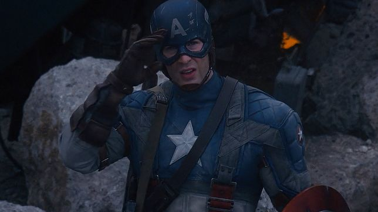

Kapitan ameryka: Pierwsze starcie
Kapitan ameryka: Pierwsze starcie -filmweb

Kapitan Ameryka (właściwie Steve Rogers) to pierwsza postać stworzona przez Marvel Comics.
Steve przed wojną był studentem sztuki, który w 1940 roku postanowił zaciągnąć się do wojska.
Nie został przyjęty z powodu słabego zdrowia, ale dostał propozycję uczestniczenia w tajnym eksperymencie.
Został poddany terapii, która zwiększyła jego inteligencję i siłę.
Przemienił się w superbohatera nazwanego Kapitan Ameryka.
Zostaje wysłany do walki z nazistami, jego największym wrogiem jest Red Skull.
Strona główna